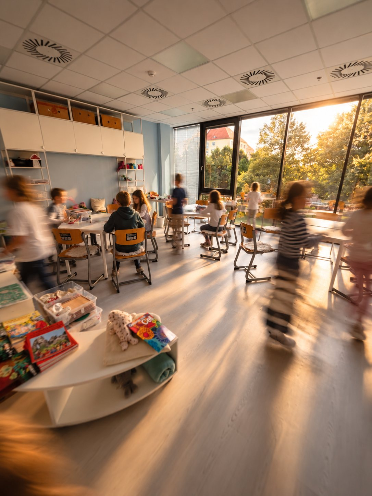
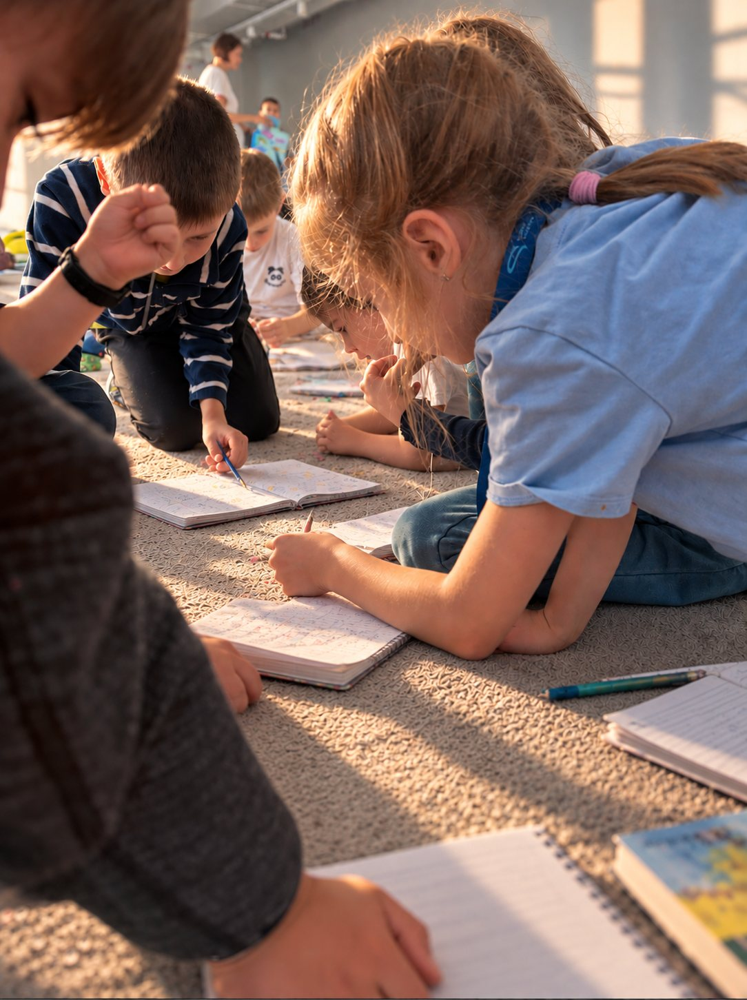
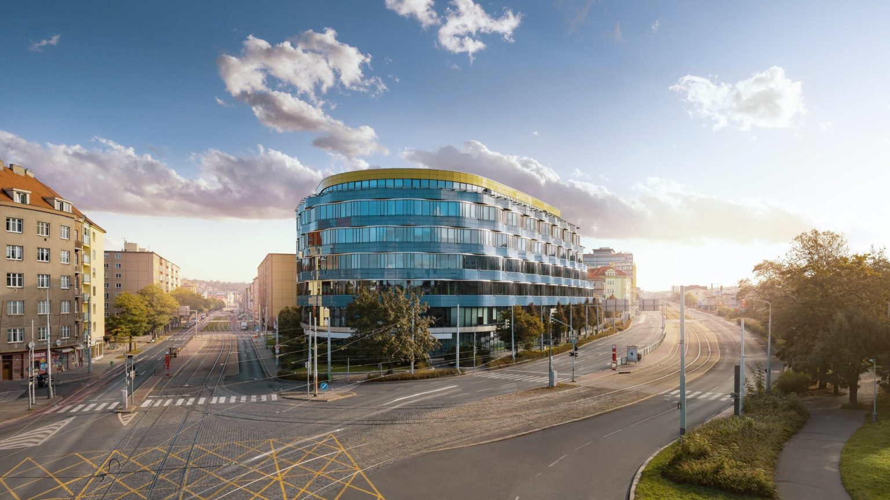

Příprava na přijímačky
Cílená příprava na jednotnou přijímací zkoušku CERMAT z češtiny a matematiky. Vedou ji pedagogové, kteří se na tyto předměty specializují.

Na 2. stupni FLOW dítě čekají malé třídy, rozšířená angličtina, španělština a cílená příprava na přijímačky z češtiny a matematiky. V novém kampusu na Balabence, s tramvají přímo u vchodu.
Nejbližší den otevřených dveří pro 2. stupeň: Rezervovat →

Druhý stupeň rozhoduje o tom, na jakou střední školu se dítě dostane. Stavíme proto na tom, co v těch čtyřech letech opravdu pomáhá.
Cílená příprava na jednotnou přijímací zkoušku CERMAT z češtiny a matematiky. Vedou ji pedagogové, kteří se na tyto předměty specializují.
Maximálně 16 dětí ve třídě. Učitel zná každé dítě, ví, kde má mezery, a pracuje s ním individuálně.
Angličtina každý den s učiteli angličtiny. Jsme partnerem Cambridge English, příprava na zkoušky Cambridge probíhá přímo ve škole.
Druhý cizí jazyk s naší učitelkou španělštiny. Další jazyk, který dítěti otevírá dveře.
Tým tvoří pedagogové a experti na jednotlivé předměty. Každý předmět učí člověk, který mu rozumí.
Moderní prostory v centru dění Prahy 9. Tramvaj přímo u vchodu, metro 10 minut pěšky.
Výuka podle programu akreditovaného MŠMT, s důrazem na to, co dítě potřebuje pro přijímačky i pro život.

Bez tlaku a s časem na rozhodnutí. Pro vás i pro dítě.
Přijďte na den otevřených dveří, na School Tour s vedením, nebo si domluvte online schůzku s managementem školy.
Dítě stráví 3 dny v běžné třídě svého ročníku. Zdarma a nezávazně. Jak zkušební dny probíhají.
Probereme, jak se dítěti dařilo, co potřebuje a jaké má cíle. Smlouvu podepisujeme až po vzájemné dohodě.
Nejčastěji od září. Přestoupit lze ale i během školního roku. Poplatky a školné.
Českomoravská 1a, Praha 9. Jedno z dopravně nejdostupnějších míst na Praze 9, starší děti zvládnou cestu do školy samy.
33 m · zastávka přímo u vchodu
750 m · 10 minut pěšky
Regionální spojení z okolí Prahy
Pro krátké zastávky při ranním předání je K+R zóna přímo u kampusu. Parkování je v okolních ulicích, v zónách s časovým omezením.

Tři cesty, jak nás poznat. Vyberte si, co se vám hodí.
Pro rodiče i děti, které přecházejí na 2. stupeň. Projdete si školu a potkáte vedení i učitele.
Osobní prohlídka s vedením školy. Prostor ptát se na cokoli, co řešíte u svého dítěte.
Když se nechcete nikam trmácet. Krátký hovor, ve kterém probereme, co pro dítě hledáte.
Nehodí se ani jedno? Napište na info@skolaflow.cz nebo volejte +420 770 673 828.